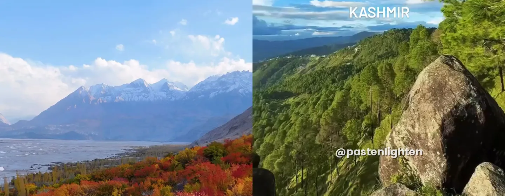

Northern Pakistan looks completely different depending on when you go. In autumn, the valleys around Skardu turn gold and red under snow-capped Karakoram peaks. In summer, the hills of Kashmir are deep green, with pine forest and clouds drifting through the valleys. These two short videos from our Instagram show both, and this guide explains when to go and how to plan each trip.
Skardu in autumn
Skardu sits in a wide valley of the Indus River in Gilgit-Baltistan, surrounded by bare mountains and sand dunes. For most of the year the scenery is shades of brown, grey and blue. Then, for a few weeks in autumn, the lines of poplar trees along the fields and lakes turn bright yellow, and apricot and willow trees add orange and red.
When the colours are at their best
The colours usually peak from mid-October to early November. The exact timing moves by a week or two each year depending on the weather, and higher villages change first. By mid-November most trees have lost their leaves, and winter cold sets in.
Where to see them
- Shangrila and Lower Kachura Lake: the red-roofed resort and its still lake are the classic autumn view, about 30 to 45 minutes from Skardu town
- Upper Kachura Lake: a quieter, deep-blue lake with orchards and walking paths around the shore
- Shigar Valley: villages, fields and the restored Shigar Fort, with poplar-lined roads all the way
- The Indus valley road and Sarfaranga cold desert: golden trees against sand dunes and river channels
- Satpara Lake: just south of Skardu, on the road towards Deosai
Getting there in autumn
We recommend flying from Islamabad to Skardu. The flight is short and scenic, but it depends on the weather, so keep a spare day before any onward connection. In autumn the road options are limited: the Babusar Pass usually closes for winter, and the UK currently advises against all travel on the section of the Karakoram Highway between Mansehra and the N15 junction, the main alternative route. Foreign visitors must register with the local authorities in Gilgit-Baltistan, which we arrange for our guests.
Good to know
- Days are often clear and sunny, but mornings and nights can be close to freezing by November, so bring warm layers, a hat and gloves
- Deosai National Park is usually only open in summer, so it is not part of an autumn trip. See our Deosai guide
- Many hotels and cafés are much quieter after the summer season, which makes autumn a calm time to visit
- Early morning and the hour before sunset give the best light for photographs of the lakes and trees
Kashmir's green hills
Kashmir is a completely different landscape from Skardu: lower, greener and softer. Pine and deodar forest covers the ridges, and after rain the clouds settle in the valleys below the hilltops. The hills are greenest in summer, from about June to September. July and August bring the monsoon, which is when the clouds are most dramatic but also when landslides can close roads, so leave time in your plan.
Before you go: check the travel advice
If you are visiting from abroad, check your government's travel advice before planning a trip to Azad Jammu and Kashmir. At the time of writing, the UK advises against all but essential travel to Azad Jammu and Kashmir and against all travel within 10 miles of the Line of Control. Canada advises avoiding all travel there. Much of the upper Neelum Valley lies close to the Line of Control. Travel insurance may not cover you if you travel against this advice.
Pakistani travellers visit Azad Kashmir in large numbers, especially in summer. Read our Neelum Valley and Sharda guide, and ask us about current road conditions before you go.
Kashmir-style scenery near Islamabad
If Azad Kashmir is not an option for you, the Murree Hills and the Galiyat (Ayubia, Nathia Gali and Dunga Gali) have the same pine-covered ridges, cool air and clouds in the valleys. They are about one to three hours' drive from Islamabad and make an easy one- or two-day trip from the capital. Nathia Gali and Ayubia are in Abbottabad District, so check the current advice for that area too.
Which trip is right for you?
| Skardu in autumn | Kashmir's green hills | |
|---|---|---|
| Best time | Mid-October to early November | June to September |
| Scenery | Golden trees, lakes, snow peaks and desert | Pine forest, green ridges, clouds and rivers |
| Getting there | Fly Islamabad to Skardu (weather permitting) | By road from Islamabad |
| Ideal length | 4 to 6 days | 2 to 5 days |
| Good to know | Cold mornings; Deosai closed | Monsoon rain and landslides in July–August; check travel advice |
Frequently asked questions
When is the best time to see autumn colours in Skardu?
Usually from mid-October to early November, when poplar, apricot and willow trees turn gold, orange and red. The exact peak moves by a week or two each year with the weather, and by mid-November most leaves have fallen.
Can you visit Skardu in November?
Yes. Early November often still has colour, clear skies and very few crowds, but mornings and nights are close to freezing. Deosai is closed by then, and flights can be cancelled in bad weather, so keep a spare day in your plan.
How do you get to Skardu in autumn?
We recommend flying from Islamabad to Skardu. The Babusar Pass road usually closes for winter, and the UK currently advises against all travel on the Karakoram Highway between Mansehra and the N15 junction, which is the other road route.
Can foreign tourists visit Azad Kashmir?
Check your government's advice first. The UK advises against all but essential travel to Azad Jammu and Kashmir and against all travel within 10 miles of the Line of Control, and Canada advises avoiding all travel there. If that applies to you, the Murree Hills and the Galiyat near Islamabad have similar pine ridges and clouds in the valleys.
Plan your trip with Past Enlighten
Our Skardu tour covers Shangrila, the Kachura lakes, Shigar and the Sarfaranga cold desert, and Skardu is also part of our Grand Northern Pakistan tour. We plan northern trips privately around your dates, so tell us when you would like to travel on WhatsApp and we will suggest the best route for the season. For more planning help, see our month-by-month guide to northern Pakistan and Skardu travel guide.
Videos: Past Enlighten. Follow @pastenlighten on Instagram for more from northern Pakistan.
Explore with Past Enlighten
Ask about route options, dates and what is included. Confirm the price and itinerary in writing before you book.
Continue planning
Travel conditions, access, schedules and prices can change. Confirm current details locally before departure.